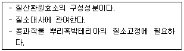
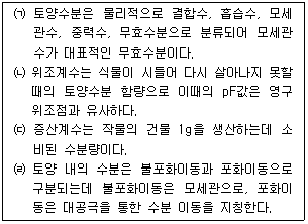

유기농업기사 (2011-03-20 기출문제)
1과목: 재배원론
1. 배추밭 100m2에 질소 10kg을 40 : 50 비율로 2회 나누어 요소 엽면시비하려 한다. 1회째 요소비료 소요량은? (단, 요소비료의 화학식은(NH2)2CO이다.)
- 약 8.6kg
- 약 13.0kg
- 약 26.1kg
- 약 39.0kg
(정답률: 50%)

2. 감자의 가을재배에서 휴면을 타파하기 위해 사용하는 식물생장조절제는?
- 옥신(auxin)
- 지베렐린(gibberellin)
- 사이코카이닌(cytokinin)
- 에틸렌(ethylene)
(정답률: 91%)
3. C3형 식물의 광합성 암반응 중 최초로 생성되는 탄소고정 산물은?
- ATP
- strach
- ADP
- PGA
(정답률: 25%)
4. 가뭄해에 대한 밭의 재배 대책이 될 수 있는 것은?
- 뿌림골을 높게 한다.
- 재식밀도를 높게 한다.
- 질소질 비료를 사용한다.
- 봄철의 보리밭이 건조할 때는 답압을 한다.
(정답률: 55%)
5. 내건성이 강한 작물의 형태적 특성이 아닌 것은?
- 식물체가 작고 잎도 작다.
- 엽조직이 치밀하고, 엽맥과 울타리 조직이 발달되어 있다.
- 체적에 대한 표면적의 비가 작고 다육화의 경향이 있다.
- 뿌리가 얕고, 지하부보다 지상의 발달이 좋다.
(정답률: 70%)
6. 식물생장조절제 중 제초제로 제일 먼저 이용되었던 다년생 작물에 속하는 것은?
- B-Nine
- 2.4-D
- Phosfon-D
- MH-30
(정답률: 75%)
7. 도복지수를 계산하는데 적용되는 인자가 아닌 것은?
- 지상부 무게
- 줄기의 좌절중
- 잎의 두께
- 줄기 길이(키)
(정답률: 69%)
8. 대전법(代田法)은 어떤 작부방식에 해당 되는가?
- 이동경작
- 휴한농법
- 순환농법
- 자유경작
(정답률: 79%)
9. 어린모 기계이앙 재배에서 다음 중 가장 중요한 벼 품종의 특성은?
- 저온발아성
- 내건성
- 내비성
- 관수저항성
(정답률: 73%)
10. 내염성이 강하여 새로 조성한 간척지의 토양에 적응성이 높은 작물은?
- 유채
- 보리
- 고구마
- 완두
(정답률: 54%)
11. 피자식물의 종자 형성에 대한 설명으로 틀린 것은?
- 중복 수정한다.
- 배는 3n이고, 배유는 2n이다.
- 정핵과 난세포가 결합하여 배를 형성한다.
- 정핵과 극핵이 결합하여 배유를 형성한다.
(정답률: 82%)
12. 작물의 수확 후 관리에 대한 설명으로 옳은 것은?
- 가공용 감자의 저장을 위한 최적온도는 3~4℃이다.
- 고춧가루의 저장 적수분 함량은 10%이하이다.
- 고구마의 안전저장 온도는 13~15℃, RH 58~90%이다.
- 고품질 쌀을 위한 저장 적수분 함량은 15% 이하, 최적온도는 10℃이다.
(정답률: 53%)
13. 다음 설명하는 미량원소는?

- 칼슘
- 마그네슘
- 몰리브덴
- 붕소
(정답률: 39%)
14. 다년생 작물에 속하는 것은?
- 호프
- 상추
- 메밀
- 시금치
(정답률: 알수없음)
15. 일장효과에 대한 설명으로 옳은 것은?
- 일장처리에 감응하는 부위는 생장점이다.
- 유엽이나 노엽보다 성엽이 더 잘 감응한다.
- 장일식물은 질소가 많은 것이 장일효과가 더욱 잘 나타난다.
- 일장효과는 광과의 관계의므로 온도와 전혀 무관하다.
(정답률: 46%)
16. 비료를 뿌린 위에 흙을 넣어 종자가 비료에 직접 닿지 않게 하는 작업은?
- 간토(間土)
- 복토(覆土)
- 배토(培土)
- 성토(盛土)
(정답률: 알수없음)
17. 방사성 동위원소가 방출하는 방사선 중 가장 현저한 생물적 효과를 가져 주로 이용되는 것은?
- α선
- β선
- τ선
- δ선
(정답률: 73%)
18. 작물생육에 알맞은 토양의 고상 분포 비율로 가장 적합한 것은?
- 10%
- 20%
- 30%
- 50%
(정답률: 90%)
19. 육묘에 이용되는 상토의 조건으로 거리가 먼 것은?
- 작물의 지지력이 커야 한다.
- 필요한 수분을 적절히 유지하여야 한다.
- 통기성보다 보수력을 높이는 것이 더 중요하다.
- 작물 생육에 필요한 양분을 보유할 수 있어야 한다.
(정답률: 70%)
20. 육묘 중 상토의 EC가 높아졌을 때에 대한 설명으로 틀린 것은?
- 상토의 EC가 높아지는 원인은 관수량 부족으로 염분이 배수공을 통하여 용탈되지 못하고 상토에 집적되기 때문이다.
- 상토의 EC가 높아지면 지상부와 뿌리의 생육에 너무 왕성하여 도장하기 쉽다.
- 상토의 EC가 높아지면 잎이 진한 녹색을 띠면서 잎 가장자리가 괴사한다.
- 높아진 상토의 EC를 낮추기 위하여 시비량을 줄이거나 관개수의 양을 증가시켜 용탈시킨다.
(정답률: 67%)
2과목: 토양비옥도 및 관리
21. 토양내 유기물이 산화상태에서 분해되었을 때 최종적으로 발생하는 물질로 구성된 것은?
- 이산화탄소, 메탄 가스
- 메탄 가스, 암모니아 가스
- 암모니아 가스, 물
- 이산화탄소, 물
(정답률: 36%)
22. 간척지토양의 염분성분인 나트륨(Na)을 제거하는데 다음 중 효과적인 재료는?
- 석고
- 제올라이트
- 돈분 부숙퇴비
- 규산질비료
(정답률: 알수없음)
23. 토양을 조사하고 분류할 때 기본적으로 토양의 단면특성을 파악해야 한다. 이 대 조사해야 할 특성에 해당하지 않는 것은?
- 토양층위의 발달
- 토성
- 토양미생물 구성
- 토양 구조
(정답률: 58%)
24. 토양 공극율을 높이기 위한 방법으로 틀린 것은?
- 유기물을 정기적으로 사용한다.
- 신 개척지에 심근성 두과식물을 재배한다.
- 사열의 단립구조화 하여 대공극을 확대한다.
- 토양의 입단화를 높이기 위하여 입단토양으로 객토한다.
(정답률: 84%)
25. 토양의 지온 상승 시 나타나는 효과와 가장 관련이 높은 것은?
- 염기포화도 증가
- 탈질작용 억제
- 암모니아화작용 촉진
- 부식물 집적 증가
(정답률: 42%)
26. 토양에서 토양수분이 이동할 때 불포화이동(unsaturated flow)이란?
- 중력에 따라 물이 이동하는 것
- 수분장력(moisture tension)이 높은 곳에서 낮은 곳으로 이동하는 것
- 증발, 식물의 흡수 또는 관개 등에 의하여 생긴 수분포텐셜 차이에 따라 물이 이동하는 것
- 토양의 공극 전체를 통하여 이동하는 것
(정답률: 70%)
27. 암석을 산성암, 중성암, 염기성암으로 분류하는데, 암석 중 어떤 화학성분의 함량(%)에 의해 구별하는가?
- Fe2O3
- Na2O
- SiO2
- CaO
(정답률: 73%)
28. 토양의 유기물 함량이 3%이고, 그 토양의 탄질률이 10이라면 토양 중 질소의 함량은? (단, 토양 유기물 중 C함량은 58%)
- 0.3%
- 0.17%
- 30%
- 17%
(정답률: 73%)
29. 질소비료를 중에는 석회물질과 혼용(混用)할 때, 암모니아 휘산작용(揮散作用)에 의하여 질소비료가 손실되므로 혼용하지 않아야 하는 비종이 있다. 석회물질과 혼용하여도 문제가 없는 비종은?
- (NH2)2CO
- (NH4)2SO4
- KNO3
- NH4Cl
(정답률: 67%)
30. 토양미생물인 세균에 대한 설명으로 옳은 것은?
- 세균은 다세포로서 분열에 의해 증식한다.
- 산소에 대한 선호도에 따라 호기성과 혐기성으로 구분한다.
- 자급영양세균은 유기물을 산화하여 에너지원으로 사용한다.
- 일반적으로 세균은 산성 조건 하에서 잘 자란다.
(정답률: 알수없음)
31. 염화암모늄 같은 강산염의 NH4+이온을 첨가 시 토양의 단위 치환용량에 대한 NH4+ 흡착량이 가장 큰 것은?
- Montmorillone계 토양
- Kaoline계 토양
- Allophane계 토양
- 부식질 토양
(정답률: 20%)
32. 수식(water erosion)에 의한 토양침식 방지작물로서 가장 효과적인 것은?
- 옥수수
- 소맥
- 고추
- 클로버
(정답률: 54%)
33. 토양수분에 관한 설명으로 옳은 것만 나열된 것은?

- ㈀, ㈁
- ㈁, ㈃
- ㈁, ㈂, ㈃
- ㈀, ㈁, ㈂, ㈃
(정답률: 36%)
34. 토양의 용적밀도가 0.65g/cm3이고, 입자밀도가 2.6g/cm3인 경우의 토양공극률은?
- 약 13%
- 약 25%
- 약 50%
- 약 75%
(정답률: 60%)
35. 토양의 유효토심의 제한요인으로 볼 수 없는 것은?
- 암반
- 지하수위
- 모래 및 자갈
- 토양유기물함량
(정답률: 54%)
36. 습윤 한랭지방에서 유기물이 쌓이므로 해서 산성반응을 나타내어 표층토는 규산의 함량이 적다. 이와 같은 규산광물의 분해되는 산성가수분해인데 그 주요생성물은 무엇인가?
- 미사
- 점토
- 석회
- 석고
(정답률: 40%)
37. 토양교질물을 양이온교환용량(CEC)이 많은 순서로 바르게 나열된 것은?
- 부식 ＞ Vermiculite ＞ Kaolinite ＞ Al과 Fe수산화물
- Al과 Fe수산화물 ＞ Kaolinite ＞ Vermiculite ＞ 부식
- 부식 ＞ Kaolinite ＞ Vermiculite ＞ Al과 Fe수산화물
- Kaolinite ＞ Vermiculite ＞ Al과 Fe수산화물 ＞ 부식
(정답률: 55%)
38. 인산질 비료의 비효도 증진방안으로 틀린 것은?
- 규반비가 적은 토양에 대해서는 유기물 시용과 산도 조정이 중요하다.
- 건토는 유기태 인산 분해와 고정인산 용출을 촉진시킨다.
- 인산 고정력이 큰 충적토 등에서는 구용성(枸溶性)보다 수용성 인산이 효과적이다.
- 토양을 담수하면 고정형 FePO4가 Fe3(PO4)2 형태로 되어 용해도가 증가한다.
(정답률: 58%)
39. 최근 경작지 토양의 양분불균형이 문제가 되고 있는데 양분불균형을 초래하게 된 원인으로 거리가 먼 것은?
- 완숙퇴비의 사용
- 사용되지 않은 양분의 탈취량 증가
- 3요소 복합비료에 편중된 시비
- 3요소 이외의 피요양분의 공급 미흡
(정답률: 67%)
40. 부식의 주요 효과로 볼 수 없는 것은?
- 토양의 보수력 증대
- 토양의 완충작용 증대
- 양분의 유효화
- 탄질비의 증가
(정답률: 73%)
3과목: 유기농업개론
41. 채소를 연작하면 많이 발생하는 토양전염병은?
- 고추 흰가루병
- 가지 덩굴쪼김병
- 콩 모자이크병
- 감자 더뎅이병
(정답률: 60%)
42. 동물이 누려야할 복지로 거리가 먼 것은?
- 도축장까지의 안전운반을 위한 합성 진정제 투여
- 행동 표현의 자유
- 갈증, 허기, 영양결핍으로부터의 자유
- 공포, 스트레스로부터의 자유
(정답률: 70%)
43. 논토양의 개량방법으로 틀린 것은?
- 암거배수
- 심경
- 객토
- 표토파쇄
(정답률: 74%)
44. 퇴비의 검사방법 중 생물학적 검사방법이 아닌 것은?
- 발아 시험법
- 지렁이법
- 유기물 시험법
- 온도 측정법
(정답률: 62%)
45. 작물 재배 시 토양 피복의 효과가 아닌 것은?
- 물과 바람에 의한 유실로부터 토양보호
- 토양 유기물 함량 감소
- 잡초 발생 억제 및 지온 상승 방지
- 토양수분 증발량 감소
(정답률: 93%)
46. 유기농산물 생산을 위한 전환기간 기준으로 옳은 것은?
- 다년생 작물 : 최초 수확 전 5년, 그 외 작물 : 파종 또는 재식 전 3년
- 다년생 작물 : 최초 수확 전 4년, 그 외 작물 : 파종 또는 재식 전 2년
- 다년생 작물 : 최초 수확 전 3년, 그 외 작물 : 파종 또는 재식 전 3년
- 다년생 작물 : 최초 수확 전 3년, 그 외 작물 : 파종 또는 재식 전 2년
(정답률: 69%)
47. 유기농산물 생산에 있어 토양개량과 작물생육을 위하여 사용하는 자재로 부적합 것은?
- 농림수산식품부장관이 고시한 품질규격에 적합한 화학합성비료
- 유기농장 부산물로 만든 퇴비
- 합성화학물질이 포함되어 있지 않은 식품 및 섬유공장의 유기적 부산물
- 벤토나이트, 펄라이트, 제오라이트
(정답률: 알수없음)
48. 벼 유기생산에서 병충해 발생과 제어법에 대한 설명으로 옳은 것은?
- 밭벼 사이에 사료용 피를 심으면 충해가 적어진다.
- 쌀의 수분함량을 12% 정도로 건조하여 저장하면 바구미의 피해가 방지된다.
- 칼리질 비료가 결핍되면 병충해의 발생이 적어진다.
- 벼의 선충심고병은 종자의 온탕처리로는 방제가 불가능하다.
(정답률: 62%)
49. 종합양분관리(INM, Integrated Nutrient Management)가 추구하는 목표가 아닌 것은?
- 다수확 일변도의 현대농업 활동과정에서 과다시비로 인한 토양의 질적 저해 개선
- 균형시비가 이루어지지 않는 과정에서 식물체에 의한 토양 양분수탈현상 개선
- 지속가능한 농업과 농촌개발을 위해 토양비옥도의 저하를 일으키는 과다시비체계 개선
- 화학비료의 다량시비를 통한 증산과 농가소득증대 위주의 영농계획 수립 및 개선
(정답률: 70%)
50. 우리나라 원예의 경영적 특징으로 거리가 먼 것은?
- 노동집약적
- 시간집약적
- 자본집약적
- 토지집약적
(정답률: 47%)
51. 농림수산식품부(농림부)에 유기농업의 확대보급을 위하여 유기농업발전기획단을 설치한 시기는?
- 1980년
- 1991년
- 1995년
- 2001년
(정답률: 65%)
52. 제초제를 사용하지 않고 벼를 재배하려면 먼저 잡초의 밀도를 줄여 나가야 한다. 잡초발생을 감소시키는 재배요인이 아닌 것은?
- 심수관계
- 밀식재배
- 균평(均平)한 써레질
- 소식재배
(정답률: 82%)
53. 시설원예지 토양의 문제점이 아닌 것은?
- 과다시비로 인한 염류집적
- 토양의 산성화
- 토양 병해충 발생
- 토양온도의 일정한 유지
(정답률: 70%)
54. 잡종강세를 이용한 F1종자가 보급되기 위해 갖추어야 할 점이 아닌 것은?
- 1회 교잡으로 많은 종자가 생산 가능할 것
- 교잡 과정이 간편할 것
- 단위면적당 재배에 요하는 종자량이 많을 것
- F1을 재배하는 이익이 F1을 생산하는 경비보다 클 것
(정답률: 75%)
55. 토양비옥도 유지증진 수단으로 적합하지 않은 것은?
- 피복작물의 재배
- 간작
- 녹비작물의 재배
- 흡비력이 높은 작물의 연작
(정답률: 80%)
56. 유기축산에서 가축에게 급여할 사일리지를 제조할 때 가장 적당한 재료의 수분함량은?
- 30%
- 50%
- 70%
- 85%
(정답률: 25%)
57. 화학합성 농약으로 병해충을 제거할 수 없는 3대 문제점(3R)이 아닌 것은?
- 저항성 증대(Resistance)
- 재활용운동(Recycling)
- 격발현상(Resurgence)
- 잔류독성피해(Residue)
(정답률: 71%)
58. 벼 유기재배에서 병해충 방제방법으로 가장 거리가 먼 것은?
- 심수관개(深水灌漑)
- 이앙기 조절에 의한 피해 회피
- 저항성품종의 이용
- 건전종묘 이용
(정답률: 57%)
59. 우리나라 논에서 잡초 군락의 천이에 대한 설명으로 옳은 것은?
- 최근 30년간 우리나라 논의 잡초발생은 다년생 잡초에 일년생잡초 군락으로 전이하고 있다.
- 논의 비옥도가 낮아지면 둑새풀, 피 등의 잡초가 우점한다.
- 우리나라 논에는 아직 제초제 저항성 잡초가 출현하지 않았다.
- 벼를 조기재배하면 올챙이고랭이와 같은 사초과 잡초가 우점한다.
(정답률: 27%)
60. 유엔 식량농업기구(FAO)와 세계보건기구(WHO) 합동식품규격사업단에서 설립하였으며 유기농산물을 비롯한 유기식품의 생산과 가공, 저장, 운송, 판매 등에 관한 국제기준을 정하는 곳은?
- HACCP 기준원
- IFOAM
- IOAS
- CODEX
(정답률: 94%)
4과목: 유기식품 가공.유통론
61. 유기식품 유통시에 지켜야 할 상항으로 틀린 것은?
- 유기식품을 저장, 운송할 때는 유기제품과 비유기제품이 섞이지 않도록 한다.
- 유기식품을 저장, 운송, 취급할 때는 유기제품에 표시를 한 경우 비유기제품이 섞여도 상관이 없다.
- 제품 가운데 일부만 유기제품으로 인증되는 경우에는 구별 저장하여 한다.
- 유기제품을 벌크(bulk)로 저장할 때는 관행제품과 별도로 저장하고 표시도 하여야 한다.
(정답률: 70%)
62. 포도주스의 제조와 관계없는 공정은?
- 파쇄
- 여과
- 가열
- 증류
(정답률: 57%)
63. 마케팅 믹스전략의 4가지 요소가 아닌 것은?
- 제품
- 가격
- 수송
- 판매촉진
(정답률: 77%)
64. 분유를 제조할 대 주로 사용되는 건조 방법은?
- 분무건조
- 열풍건조
- 동결건조
- 드럼건조
(정답률: 39%)
65. 포장 재료의 유리의 단점이 아닌 것은?
- 충격과 열에 의해 깨지기 숩다.
- 기체 투과성 및 투습성이 높다.
- 빛이 투과하여 내용물이 변하기 쉽다.
- 수송 및 포장에 경비가 많이 든다.
(정답률: 83%)
66. 농산물이 포장되어 있는 필름(film)의 적절한 투과성에 의해 포장 내부의 가스조성이 적절하고 유지되어 농산물을 신선하게 보관할 수 있는 방법에 해당하는 것은?
- MA(modified atmosphere) 저장
- CA(controlled atmosphere) 저장
- 가스충전 포장
- 무균밀봉 포장
(정답률: 58%)
67. D값이 121℃에서 2분인 세포포자의 수를 103으로부터 100으로 감소시킬 때의 F값은?
- 1분
- 3분
- 6분
- 9분
(정답률: 60%)
68. 다음 중 진공포장에 적장한 식품은?
- 과일
- 채소
- 버섯
- 과자
(정답률: 80%)
69. 식품 중 대장균군 검사 결과 MPN 값이 50이 나왔다면 검체 100㎖ 중에 존재하는 대장균의 수는 몇 개인가?
- 5
- 50
- 500
- 5000
(정답률: 39%)
70. 제면 시 첨가하는 소금의 주요 역할이 아닌 것은?
- 탄력을 높인다.
- 면의 균열을 방지한다.
- 보존효과를 부여한다.
- 산화를 방지한다.
(정답률: 59%)
71. 식중독과 그 예방법이 옳게 연결된 것은?
- 리스테리아균 식중독 – 저온으로 보관한다.
- 바실러스 세레우스 식중독 – 섭취 전 열처리를 한다.
- 장염비브리오 식중독 – 곡류와 그 가공품, 통조림 식품을 특히 주의한다.
- 황색포도상구균 식중독 – 섭취 전 재가열한다.
(정답률: 46%)
72. 유통비용 중 직접비용이 아닌 것은?
- 저장비
- 수송비
- 포장비
- 점포임대비
(정답률: 73%)
73. 유기가공식품에서 허용되지 않는 가공방법은?
- 분쇄
- 합성
- 가열
- 발효
(정답률: 알수없음)
74. 곰팡이가 생산하는 신경독 물질은?
- 솔라렌(psoralens)
- 시트레오비리딘(citreoviridin)
- 시트라닌(citrinin)
- 아플라톡신(aflatoxin)
(정답률: 15%)
75. HACCP의 7원칙이 아닌 것은?
- 공정흐름도 현장 확인
- 위해요소분석
- 중요관리점결정
- 문서화, 기록유지방법 설정
(정답률: 42%)
76. 유기식품(organic food)의 정의로 맞는 것은?
- 최종제품 중에 유기재료가 100% 있을 것
- 최종제품 중에 유기재료가 95% 이상 있을 것
- 최종제품 중에 유기재료가 90% 이상 있을 것
- 최종제품 중에 유기재료가 50% 이상 있을 것
(정답률: 50%)
77. 우유의 저온살균 방법은?
- 63℃ 15분
- 63℃ 30분
- 121℃ 15초
- 121℃ 30초
(정답률: 70%)
78. 농산물 유통의 특성이 아닌 것은?
- 계절의 편재성
- 부피와 중량성
- 부패성과 용도의 다양성
- 양과 질의 균형
(정답률: 39%)
79. 유기식품 유통기구의 문제점이 아닌 것은?
- 유통기구에서의 판매인력 전문성 부족
- 다양한 공급 품목의 무한성
- 유기식품 출하자에 대한 결제 지연
- 유기식품 소매기관의 영세성
(정답률: 34%)
80. 미생물의 가열 치사 기간을 10배 변화시키는데 필요한 가열 온도의 차이를 나타내는 값은?
- F값
- Z값
- D값
- K값
(정답률: 50%)
5과목: 유기농업관련 규정
81. 유기식품의 생산 ㆍ 가공 ㆍ 표시 ㆍ 유통에 관한 Codex 가이드라인에 의한 유전자 조작/변형기법에 해당되지 않은 것은?
- 캡슐화
- 미량주입
- 잡종교배
- 세포융합
(정답률: 50%)
82. 친환경농산물 인증심사 과정에서 재배포장 토양검사용 시료채취 방법으로 옳은 것은?
- 토양시료 채취 지점은 재배필지별로 최소한 5개소 이상으로 한다.
- 밭토양은 지표로부터 15cm, 논토양은 10cm 깊이까지의 흙을 각 100g씩 채취한다.
- 토양시료 채취지점은 국립농산물품질관리원장이 정하는 방법에 따라 선정한다.
- 토양시료 채취는 인증심사원 입회 하에 인증 신청인이 직접 채취한다.
(정답률: 27%)
83. 유기식품의 생산 ㆍ 가공 ㆍ 표시 ㆍ 유통에 관한 Codex가이드라인의 유기생산 원칙 중 병충해의 관리방법과 가장 거리가 먼 것은?
- 병해충 저항성 품종 선택
- 천적활동을 조장하는 생태계 조성
- 두과작물, 녹비작물, 심근성작물 재배
- 덫, 울타리, 빛, 소리 등 기계적 수단 이용
(정답률: 77%)
84. 친환경농산물 인증품이 인증기준에 맞지 않는 원인이 인증기관의 고의로 인하여 발생한 경우 2차위반시 인증기관에 내릴 수 있는 행정처분은?
- 경고
- 업무정지 3월
- 업무정지 6월
- 지정취소
(정답률: 54%)
85. 유기축산물의 인증기준에서 경영관련 자료로 1년 이상 보관하여야 하는 자료가 아닌 것은?
- 질병발생 및 예방관리계획
- 가축구입사항 및 번식내용
- 사료의 생산 ㆍ 구입 및 급여내용
- 공장형 퇴비 생산 내용
(정답률: 70%)
86. 유기가공식품의 인증신청시 제출해야 하는 서류가 아닌 것은?
- 유기취급계획서
- 식품품목제조보고서
- 유기가공식품 생산계획서
- 원료 및 첨가물이 유기가공식품 인증기준서에서 정하고 있는 기준에 맞는다는 것을 증명하는 서류
(정답률: 70%)
87. 유기가공식품의 인증기준에 따라 유기식품의 제조 ㆍ 가공과정에서 유기적 순수성을 유지하기 위한 유기적 취급방법에 적합하지 않은 것은?
- 공장주변 등의 해충 방제는 예방적 방법, 기계적 ㆍ 물리적 또는 생물학적 방법 등에 따라 실시한다.
- 방제가 충분하지 않을 때는 허용된 살충 물질을 사용할 수 있으나, 유기식품의 유기적 순수성이 훼손되지 않도록 해야 한다.
- 제조설비 중 식품과 직접 접촉하는 부분에 대한 세척, 소독 및 살균은 먹는 물 및 물질목록에 허용은 가공보조제를 이용할 수 있으며, 이들 세척 등에 사용된 물질은 유기식품에 함유되어도 된다.
- 세척제 ㆍ 소독제를 시설 및 장비에 사용하는 경우 유기적 식품의 유기적 순수성이 훼손되지 않도록 조치하여야 한다.
(정답률: 54%)
88. 유기농림산물 인증기준의 유기농산물의 품질관리에 관한 사항 중 잔류농약에 관련 사항으로 틀린 것은? (단, 농약잔류가 허용되는 경우는 식품의약품안전청장이 고시한 농산물의 농약잔류허용기준의 10분의 1 이하이다.)
- 원칙적으로 잔류농약은 검출되지 아니하여야 한다.
- 인근 관행농업의 포장으로부터 바람에 의해 비산한 경우 농약잔류는 허용될 수 있다.
- 관개 또는 이웃 포장의 배수 등 농업용수에 의한 농약잔류는 허용될 수 있다.
- 식품의약품안전청장이 고시한 농산물의 농약잔류허용기준이 설정되어 있지 아니한 농약이 검출된 경우에는 그 양이 식품의약품안전청장의 고시에서 정한 농산물의 잔류농약 잠정기준의 5분의 1이하이어야 한다.
(정답률: 80%)
89. 유기가공식품 제조시 응고제로 사용할 수 있도록 허용된 가공보조제로만 나열된 것은?
- 염화칼슘, 탄산칼슘, 수산화칼륨
- 염화칼슘, 황산칼슘, 염화마그네슘
- 염화칼슘, 수산화나트륨, 탄산나트륨
- 염화칼슘, 수산화칼륨, 수산화나트륨
(정답률: 48%)
90. 친환경농산물 인증심사, 판정 및 재심사의 절차와 방법으로 틀린 것은?
- 인증기관은 유기농산물인증을 받은 자가 무농약농산물 인증을 신청한 경우 인증심사의 전부 또는 일부를 면제할 수 있다.
- 인증기관은 인증을 받은 자가 인증 유효기간이 만료되어 다시 같은 종류의 인증을 신청하는 경우 인증심사의 전부 또는 일부를 면제할 수 있다.
- 인증기관은 인증 부적합으로 판정할 경우에는 그 사유를 명시하여 신청인에게 서면으로 통지하여야 한다.
- 인증신청인이 인증 부적합 판정에 대하여 재심사를 받으려면 부적합 통지를 받은 날로부터 10일 이내에 재심사신청서를 제출하여야 한다.
(정답률: 19%)
91. 유기식품의 생산 ㆍ 가공 ㆍ 표시 ㆍ 유통에 관한 코덱스 가이드라인 에서 유기농법으로 전환하는 과정에 있는 제품은 유기농법으로 전환 하는 과정에 있는 제품은 유기농법을 사용하여야 생산하기 시작한 후 어느 정도의 기간이 지나야 “유기로 전환중”이라는 표시를 할 수 있는가?
- 6개월
- 12개월
- 18개월
- 24개월
(정답률: 74%)
92. 유기가공식품 인증제도 운영지침에 따른 유기가공식품 세부표시기준에서 유기농산물의 함량에 따른 표시기준에 대한 설명으로 틀린 것은? (단, 원재료의 함량은 최종 제품에 남아 있는 원재료의 량으로 한다.)
- 원재로 100% 유기농산물을 사용하는 경우는 유기 100퍼센트(%)로 표시할 수 있다.
- 원재료 95% 이상 유기농산물을 사용하는 경우는 주표시면에 “유기”(함량표시)표시를 할 수 있다.
- 원재료 95~70% 유기농산물을 사용하는 경우는 주표시면에 “유기”(함량표시)표시를 할 수 있다.
- 원재료 95~70% 유기농산물을 사용하는 경우는 유기인증표시와 로고 등의 표시를 할 수 없다.
(정답률: 62%)
93. 미국의 유기농업에 대한 설명으로 틀린 것은?
- 미국은 CSA운동은 미국 유기농업이 성장하는데 크게 기여하였다.
- 1990년 유기식품생산법(Organic Foods Production Act)이 제정되었다.
- 유기식품생산기준으로 국가유기식품 프로그램(National Prganic Program)이 있다.
- 미국의 유기농산물을 기본적으로 미국농산물표준협회(American Agriculture Standards Association)에서 관장한다.
(정답률: 39%)
94. 유기가공식품을 제조하기 위해 허용된 취급물질 중 첨가물이 아닌 가공보조제로만 사용되는 물질은?
- 염화칼슘
- 구연산
- 수산화나트륨
- 카나우바왁스
(정답률: 28%)
95. 친환경농산물의 표시에 대한 규정으로 틀린 것은?
- 도형 또는 문자로 표시할 수 있다.
- 생산자의 성명 ㆍ 전화번호, 인증번호, 품목, 산지, 무게 등을 표시하여야 한다.
- 포장 또는 용기의 앞 ㆍ 뒷면에 모두 표시하여야 한다.
- 포장을 하지 아니하고 판매하거나 날개로 판매하는 경우에는 해당 인증품에 스티커를 부착하거나 표시판 또는 푯말로 표시할 수 있다.
(정답률: 54%)
96. 친환경농산물 표시 기준에 대한 설명으로 옳은 것은?
- 표시도형의 각 모서리는 각지게 한다.
- 문자의 활자체는 고딕체로 한다.
- 표시도형의 크기는 포장재의 크기에 관계없이 일정하게 정해져 있다.
- 천연 ㆍ 자연 ㆍ 무공해 ㆍ 내추럴 등 강조 표시는 가능하다.
(정답률: 알수없음)
97. 친환경농업육성법 제17조의5의 부정행위의 금지 등 규정에 위반하여 3년 이하의 징역 또는 3천만원 이하의 벌금에 처하게 되는 자가 아닌 것은?
- 인증기관으로 지정을 받지 아니하고 친환경농산물 인증을 행한 자
- 인증품이 아닌 농산물에 친환경농산물 표시 또는 이와 유사한 표시를 한 자
- 인증품에 인증품이 아닌 농산물을 혼합하여 판매하거나 판매할 목적으로 보관 ㆍ 운반 또는 진열한 자
- 친환경농산물표시 또는 이와 유사한 표시를 한 인증품이 아닌 농산물임을 알고 이를 판매하거나 판매할 목적으로 보관 ㆍ 운반 또는 진열한 자
(정답률: 알수없음)
98. 유기가공식품의 인증기준에서 유기가공에 사용할 수 있는 가공원료의 기준으로 틀린 것은?
- 해당 식품의 제조 ㆍ 가공에 사용한 원재료의 85%이상이 친환경농업육성법에 의거한 인증을 받은 유기농산물이어야 한다.
- 동일 원재료에 대하여 유기농산물과 비유기농산물을 혼합하여 사용하면 아니 된다.
- 방사선 조사 처리된 원재료를 사용하여서는 아니 된다.
- 식품을 제조 ㆍ 가공할 때 유기적 취급에 허용하는 물질을 첨가물 및 가공보조제로 사용할 수 있다.
(정답률: 75%)
99. 유기가공식품 생산 및 취급 시 사용이 가능한 유기적 취급 물질로서 탄산류에 해당하지 않는 것은?
- 탄산칼슘
- 탄산칼륨
- 탄산암모늄
- 아질탄산나트륨
(정답률: 57%)
100. 유기식품의 가공 ㆍ 생산 ㆍ 표시 ㆍ 유통에 관한 코덱스가이드라인에서 허용하는 유기축산 사일리지 첨가제와 가공보조제로서 적합하지 않은 것은?
- 바다 소금(sea salt)
- 굵은 암염(coarse rock salt)
- 아미노산(amino acid)
- 당(sugar)
(정답률: 58%)